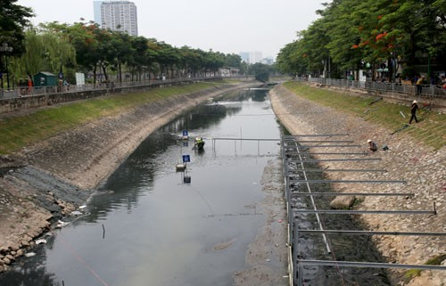
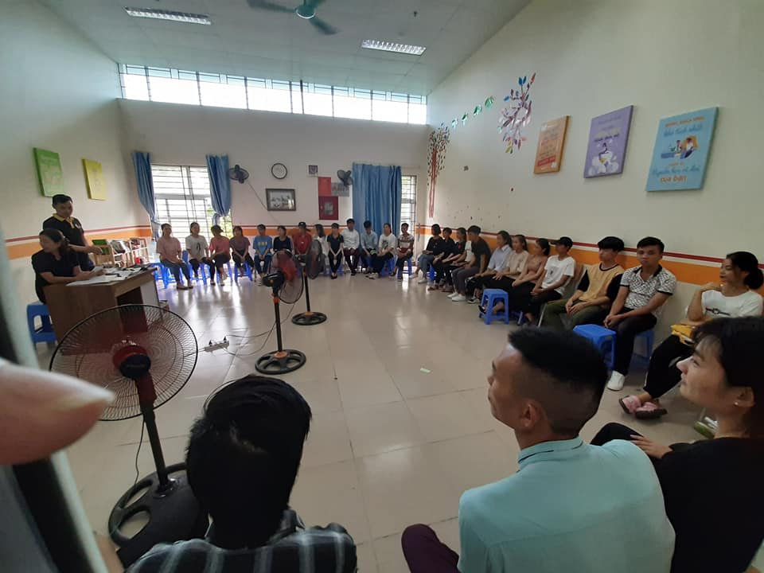
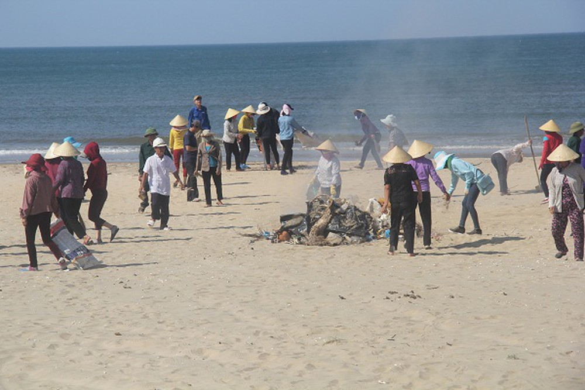

Water - Esential platform of life.
Solutions to save the water.
Through the aforementioned issues on the status of water resources, the protection of water resources is an urgent issue that can determine human life in the future. Therefore, we need to act now to save lives in the future.
Currently in Vietnam, there are programs and ways to treat dirty water as follows:
The Vietnamese government is cooperating with Japan to clean the To Lich river in the center of Hanoi city.
The To Lich river section is being gathered to dispose of sludge.
There are many companies and industrial parks are building sewage treatment systems before discharging into the environment.
Handling organizations and individuals that destroy the water environment.
Regarding propaganda education:
There are many schools and education centers that teach students about environmental protection such as:
REACH Center Hanoi teaches students green skills to protect environment and water resources.
KHAT VONG Fund teaches children in difficult circumstances on how to protect the environment of soil and water ...
In addition, localities are actively propagating to people about the consequences of lack of clean water and ways to protect water sources.
Raising one's awareness is crucial.
Many volunteer programs clean the rubbish on the shores of youth organizations and other organizations, these beautiful actions will spread to the whole society.
Young people clean trash in the Central.
We can see the recovery of water pollution is very urgent, if it continues, in the near future, the natural water source will be exhausted. So right now we must join hands to protect a clean world, even though it is difficult but know if you can read this article, please wake up and take action to save the water and save it. take our own life.